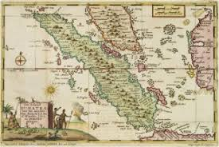

Galeri
Visualisasi momen-momen penting dalam cerita Putri Gading Cempaka


Legenda Kesetiaan dari Tanah Bengkulu
Kisah cinta abadi putri raja yang berubah menjadi bunga
Mulai PetualanganKisah cinta tragis putri cantik dari Kerajaan Sungai Serut
Di Kerajaan Sungai Serut, Bengkulu, hiduplah seorang putri cantik jelita bernama Gading Cempaka. Ia adalah putri Raja yang terkenal dengan kecantikan dan kebaikan hatinya. Banyak pangeran dari berbagai kerajaan datang melamarnya.
Suatu hari, datanglah seorang pemuda tampan bernama Mahkota Alam dari negeri seberang. Mereka saling jatuh cinta pada pandangan pertama. Raja menyetujui hubungan mereka dan merencanakan pernikahan yang megah.
Sebelum pernikahan berlangsung, kerajaan diserang oleh musuh. Mahkota Alam harus pergi berperang untuk membela kerajaan. Ia berjanji akan kembali untuk menikahi Putri Gading Cempaka setelah perang usai.
Hari demi hari, minggu demi minggu, Putri Gading Cempaka menunggu kepulangan kekasihnya di tepi sungai tempat mereka pertama kali bertemu. Ia menolak semua pinangan pangeran lain karena setia menunggu Mahkota Alam.
Suatu hari, datang kabar bahwa Mahkota Alam gugur dalam pertempuran. Putri Gading Cempaka sangat terpukul mendengar kabar ini. Ia bersedih sangat dalam dan menangis tanpa henti di tepi sungai tempat mereka biasa berjumpa.
Karena kesedihan yang mendalam dan kesetiaan cintanya, Sang Dewi mengabulkan doanya. Putri Gading Cempaka berubah menjadi bunga cempaka yang harum dan indah. Bunga itu tumbuh di tepi sungai sebagai simbol cinta abadi dan kesetiaan.
Karakter-karakter yang menghiasi legenda Putri Gading Cempaka
Tokoh Protagonis
Putri cantik dari Kerajaan Sungai Serut yang terkenal dengan kecantikan dan kebaikan hatinya. Ia memiliki hati yang setia dan rela menunggu cinta sejatinya hingga akhir hayat.
Kekasih
Pemuda tampan dan pemberani dari negeri seberang. Ia jatuh cinta pada Putri Gading Cempaka dan berjanji akan kembali setelah perang. Sosok kesatria yang gagah berani.
Ayahanda
Raja yang bijaksana dan menyayangi putrinya. Ia menyetujui hubungan Putri Gading Cempaka dengan Mahkota Alam karena melihat ketulusan cinta mereka berdua.
Nilai-nilai luhur yang terkandung dalam cerita Putri Gading Cempaka
Putri Gading Cempaka menunjukkan kesetiaan luar biasa pada kekasihnya. Ia menolak semua pinangan dan setia menunggu hingga akhir. Kesetiaan adalah fondasi cinta sejati.
Meski banyak godaan dan tawaran dari pangeran lain, Putri Gading Cempaka tetap teguh pada pilihannya. Keteguhan hati adalah kekuatan yang mengalahkan segala rintangan.
Cinta sejati tidak mengenal batas waktu dan ruang. Bahkan kematian tidak dapat memisahkan dua jiwa yang saling mencintai dengan tulus. Cinta abadi melampaui segalanya.
Mahkota Alam rela berperang demi kerajaan dan kehormatan. Putri Gading Cempaka rela menunggu dan bersedih hingga berubah menjadi bunga. Pengorbanan adalah bukti cinta yang tulus.
Menunggu membutuhkan kesabaran luar biasa. Putri Gading Cempaka sabar menanti kepulangan kekasihnya tanpa mengeluh. Kesabaran adalah kebajikan yang mulia.
Transformasi menjadi bunga cempaka melambangkan bahwa cinta sejati tidak pernah mati. Ia abadi dan terus hidup dalam berbagai wujud. Cinta sejati adalah keabadian.
Visualisasi momen-momen penting dalam cerita Putri Gading Cempaka